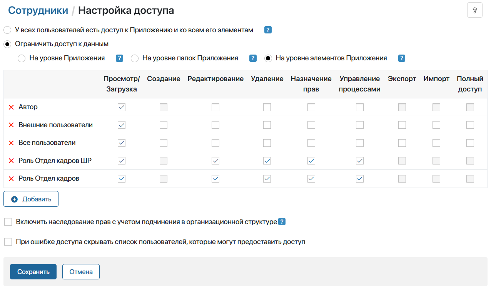

После создания штатного расписания и управленческой структуры юридического лица, а также определения ролей ответственных пользователей, администраторы могут настроить сотрудникам права доступа к приложениям с кадровыми документами.
В ELMA365 КЭДО 3.0 ограничение прав доступа выполняется на уровне групп пользователей, которые соответствуют ролям сотрудников в кадровых процессах.
Группы пользователей в ELMA365 КЭДО 3.0 и их роли в кадровых процессах:
|
С учётом этих групп вы можете настроить:
- доступ по роли пользователей — права выдаются всем сотрудникам, которые выполняют одинаковую роль в кадровых процессах в компании. Такой доступ настраивается с помощью групп пользователей, преднастроенных на уровне раздела КЭДО 3.0. Например, в группу Отдел кадров входят все специалисты отдела кадров организации, при этом они могут быть трудоустроены в разные юридические лица. На уровне этой группы вы можете предоставить доступ всем специалистам отдела кадров к определённому приложению, например, к локальным нормативным актам организации;
- доступ по филиалам компании — права разграничиваются внутри каждой преднастроенной группы. Они выдаются сотрудникам, выполняющим одинаковую роль в юридическом лице компании. Определить, в какое юридическое лицо трудоустроен сотрудник, можно по штатному расписанию и управленческой структуре. При их настройке создаются группы пользователей, включающие сотрудников одной роли в определённой организации. С помощью этих групп можно предоставить пользователям доступ к тем элементам приложений, которые относятся к одному филиалу. Например, специалисты отдела кадров одной организации будут работать только с кадровыми документами, оформленными от того же юридического лица.
Задать права для пользователей по их роли
В разделе КЭДО 3.0 по умолчанию созданы группы пользователей: Отдел кадров, Подписанты, Бухгалтерия, Офис-менеджеры, Сотрудники, Ответственные за КЭДО. Эти группы связаны с ролями пользователей в кадровых процессах.
Когда вы настраиваете штатное расписание или управленческую структуру, вы определяете, какие должности занимают сотрудники на определённой роли. После этого создаются специальные группы пользователей, которые включают этих сотрудников. Эти специальные группы из штатного расписания и управленческой структуры автоматически добавляются в одноименные преднастроенные группы: Отдел кадров, Подписанты, Бухгалтерия и т. д.
Таким образом каждая преднастроенная группа объединяет сотрудников компании по их роли в кадровых процессах, вне зависимости от того, в какое юридическое лицо они трудоустроены. Например, в группу Бухгалтерия входят все должности, которые назначены в подразделениях на роль бухгалтера, т. е. все бухгалтеры компании.
С помощью преднастроенных групп доступ настраивается для всех сотрудников, выполняющих одну роль. Вы можете установить права к приложениям и справочникам в ELMA365 КЭДО 3.0, или их видимость в разделах.
Действия для настройки доступа по роли
Например, настройте доступ к справочнику График работ так, чтобы видеть приложение в левом меню раздела КЭДО 3.0 могли только сотрудники отдела кадров. Затем укажите права доступа к данным приложения: просматривать элементы смогут все пользователи, а создавать, редактировать и удалять записи только специалисты отдела кадров и администраторы системы.
Для этого:
- Перейдите в раздел КЭДО 3.0 > График работ.
- Настройте видимость приложения в левом меню раздела для сотрудников отдела кадров. Для этого нажмите на шестерёнку рядом с его названием и выберите Доступ к приложению.
- В открывшемся окне нажмите на значок лупы, выберите преднастроенную группу Отдел кадров и сохраните настройки.
- Теперь задайте доступ к элементам приложения. Нажмите на шестерёнки рядом с его названием и выберите Настройка доступа.
- В открывшемся окне отметьте опцию На уровне Приложения, чтобы выдать доступ ко всем записям.
- Добавьте нужные группы, например, Отдел кадров, Администраторы, Все пользователи и Внешние пользователи. Затем в таблице отметьте типы прав, которые нужно предоставить каждой группе и сохраните настройки.
Ограничить доступ по филиалам компании
Вы можете настроить доступ к приложениям ELMA365 КЭДО 3.0 по филиалам компании в соответствии с созданным штатным расписанием и управленческой структурой.
Доступ разграничивается внутри преднастроенных в ELMA365 КЭДО 3.0 групп, которые связаны с ролями пользователей: Отдел кадров, Подписанты, Бухгалтерия, Офис-менеджеры, Сотрудники, Ответственные за КЭДО.
При предоставлении доступа учитывается роль сотрудника, а также юридическое лицо, в которое он трудоустроен. Так, сотрудники, трудоустроенные в определённую организацию, будут работать только с теми элементами приложений, которые относятся к тому же юридическому лицу.
Доступ по филиалам предоставляется на уровне должности, которую занимает сотрудник, и не привязывается к определённому пользователю. При изменении штата и приёме новых сотрудников вам не нужно указывать права пользователям по отдельности.
Для распределения прав по филиалам в ELMA365 КЭДО 3.0 предусмотрен следующий алгоритм:
- Вы назначаете сотрудников на определённые роли в кадровых процессах при настройке штатного расписания и управленческой структуры. В системе создаются специальные пользовательские группы. Они соответствуют преднастроенным группам и связывают роль пользователя в подразделении, его должность и конечного сотрудника.
- В приложениях ELMA365 КЭДО 3.0 по умолчанию добавлены специальные свойства типа Роль. Они сопоставляются с ролями сотрудников из штатного расписания и управленческой структуры. Кроме того, в них автоматически добавляются созданные пользовательские группы. Таким образом свойство типа Роль объединяет всех сотрудников, исполняющих определённые обязанности, например, специалистов отдела кадров.
- Вы настраиваете доступ для приложений ELMA365 КЭДО 3.0 на уровне их элементов и выбираете свойства типа Роль из их контекста. Например, если предоставить права на просмотр кадровых документов для свойства Роль Отдел кадров ШР, доступ получат все сотрудники из групп, связанных с этим свойством.
- После такой настройки права к отдельным элементам проверяются с учётом штатного расписания или управленческой структуры. Когда сотрудник оформляет заявку, в системе учитывается его подразделение и юридическое лицо, и осуществляется поиск соответствующих ответственных. Так, специалисты отдела кадров будут просматривать заявки и документы только тех сотрудников, которые относятся к их юридическому лицу.
Например, в разделе КЭДО 3.0 создан справочник Сотрудники. Вы можете назначить доступ к его записям так, чтобы специалисты отдела кадров одного юридического лица видели только тех сотрудников, которые трудоустроены в эту же организацию. Когда в отдел кадров принимают нового сотрудника, он автоматически включается в соответствующую группу пользователей. Таким образом права доступа определяются согласно его должности из штатного расписания организации.
Действия для настройки прав по филиалам компании
Чтобы настроить доступ по филиалам, выполните следующие действия:
- Перейдите в приложение, нажмите на шестерёнку рядом с его названием и выберите Настройка доступа.
- Поскольку необходимо проверять доступ к каждой записи в приложении, отметьте опцию На уровне элементов Приложения.
- Нажмите + Добавить и выберите опцию Свойство элемента в качестве объекта для назначения прав.
- Выберите нужное свойство приложения. Например, Роль Отдел кадров для ограничения прав по управленческой структуре и Роль Отдел кадров ШР — для штатного расписания.

- Сохраните настройки доступа.